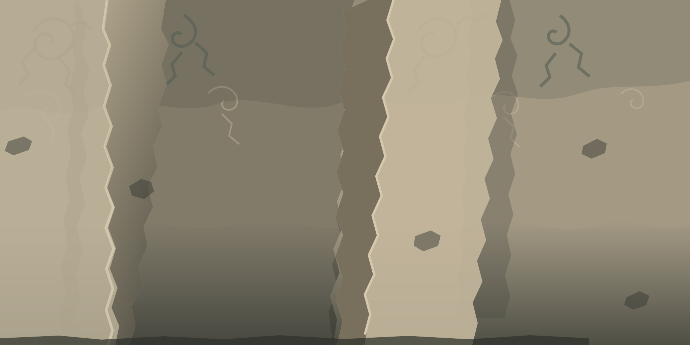
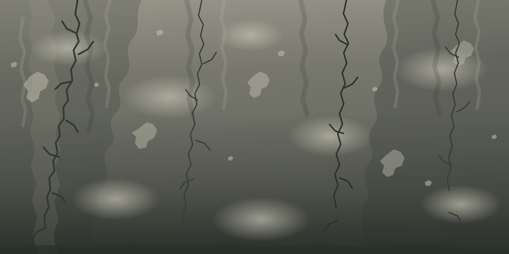
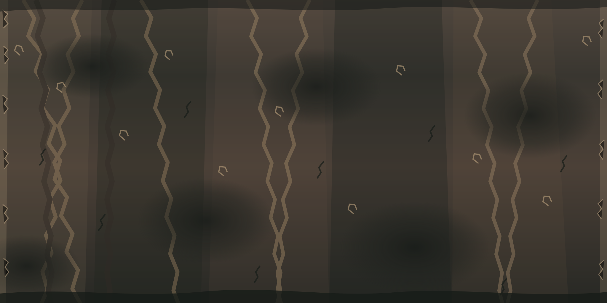

Each surface starts as its own authored artwork. The local JavaScript compositor can layer material-specific micrograin, dirt, streaks and scratches over that base; it does not replace every material with one generic design. No external image library, CDN or third-party runtime is required.



Keep each hand-authored base surface, then compose its own fine grain, wear, streaking and scratch layers. Material-specific settings make brick, concrete, wood, metal, ceramic, paper, plaster and carpet behave differently.
Preparing authored artwork and detail layers…
Height and roughness exports are artistic approximations from this illustration—not measured PBR scans. They need material review before use in a production renderer. Large exports can use substantial memory.
This layer composer adds material-specific microdetail to each individually designed base; it is not a substitute for real photogrammetry. The existing SVG master remains available below for direct download.
Inspect the original SVG master or export a high-resolution PNG. PNG export scales the authored drawing; it does not invent new detail.
Ready. Choose an authored surface above.
8K export scales the current artwork to 8192 × 4096. It cannot add photographic micro-detail that is not in the master. Large exports may use substantial memory; if the browser runs out of memory, choose 4K or download the SVG master.